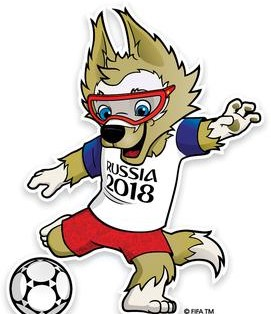
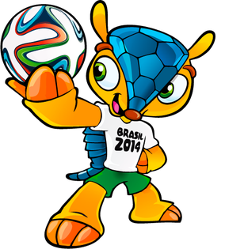
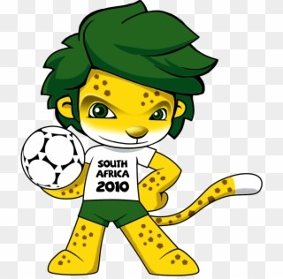

HOME

IMAGE

VIDEO

TABLE

FEEDBACK
FIFA MASCOT 2018 - ZABIVAKA

- Zabivaka was the official mascot of the 2018 FIFA World Cup, which was held in Russia. The name is a
blend
of the Russian words собака ("dog") and забивать ("to strike").
- Designed by student designer Ekaterina Bocharova, the mascot was selected by internet voting in Russia.
FIFA MASCOT 2014 - FULECO

- Fuleco was the official mascot of the 2014 FIFA World Cup in Brazil.
- Representing a Brazilian three-banded armadillo, a species of armadillo which is native to Brazil and
categorized as a vulnerable species on the IUCN Red List.
FIFA MASCOT 2010 - ZAKUMI

- Zakumi the Leopard was the official mascot for the 2010 FIFA World Cup.
- He is a cheerful, sporty anthropomorphized leopard with green hair, presented on 22 September 2008.
- His name comes from "ZA", the ISO 3166-1 alpha-2 code for South Africa, and kumi, a word that means
"ten" in several African languages, referencing the year 2010.